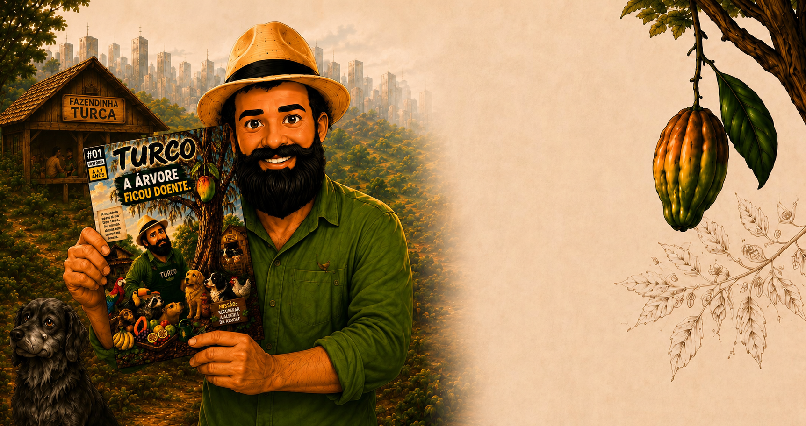
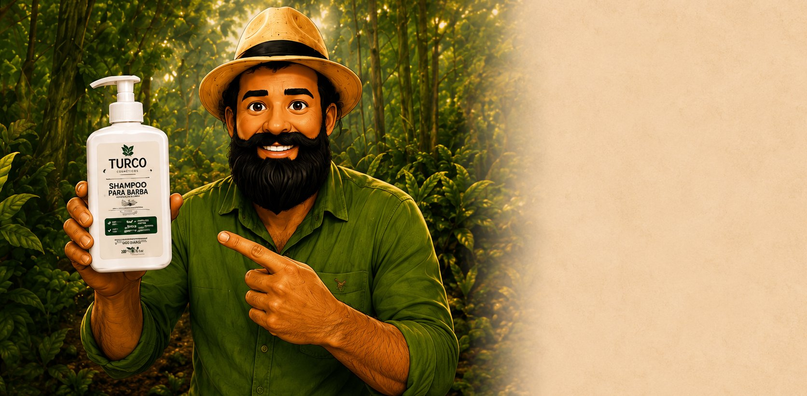
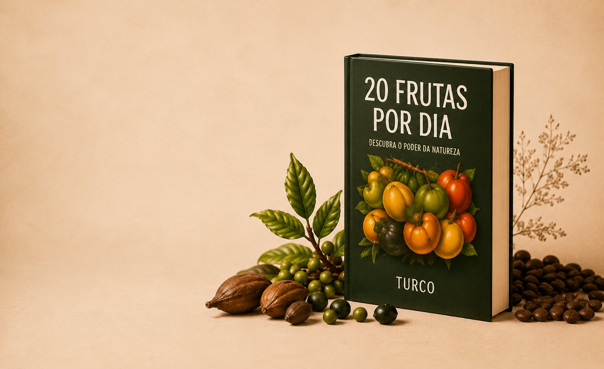
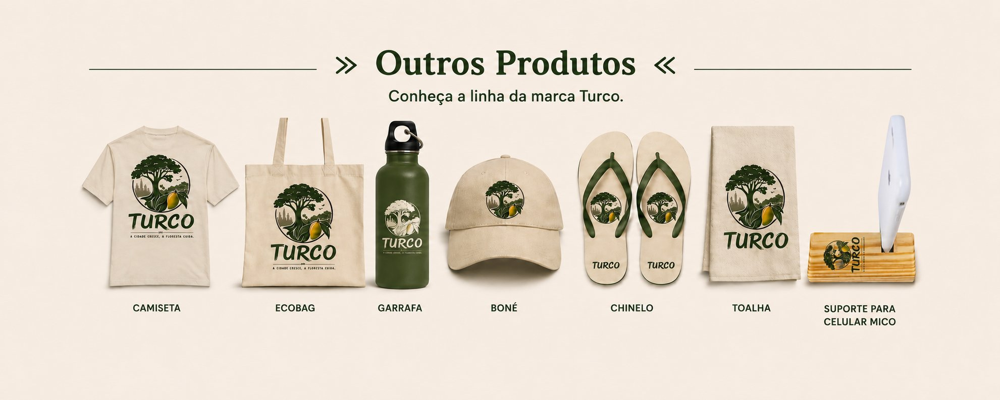
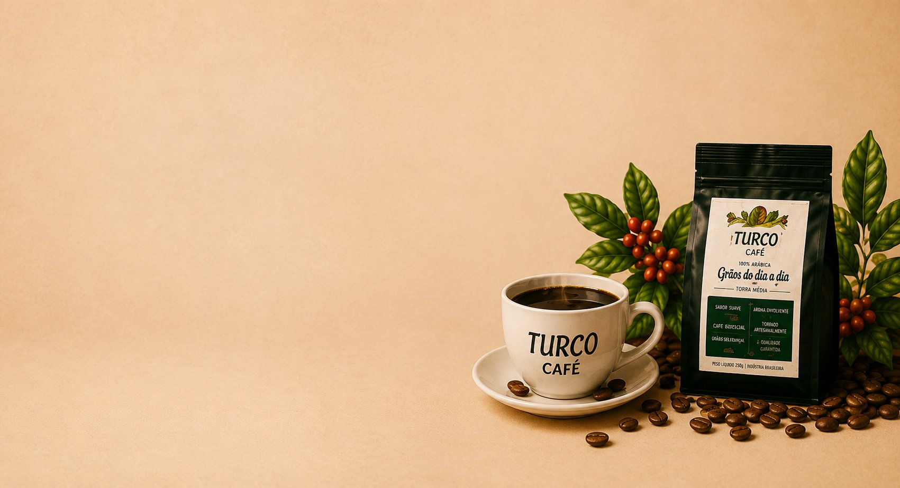
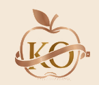
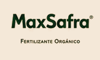
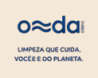
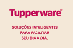

GIBI TURCO
Menos telas. Mais histórias.
Quem compra o gibi contribui com a reciclagem de 2 toneladas de papel por mês.
Avulso - R$ 36,00
3 edições por R$ 87,00
Manifesto Turco
A cidade adoece.
A floresta cura.
Turco é um defensor da vida conectada à natureza, promovendo alimentação orgânica, cosméticos veganos e a educação infantil.

Shampoo Turco
para Barba
Para a mulher presentear o homem que se cuida.
R$ 75,00
ou 3x de R$ 25,00
PIX: R$ 67,50
- ✔ Controle da oleosidade
- ✔ Prevenção de pelos encravados
- ✔ Hidratação dos fios e da pele
- ✔ Ação calmante
- ✔ Sensação refrescante

E-book 20 Frutas
por Dia
Seu corpo vai aprender a pedir fruta.
R$ 36,00
4x de R$ 9,00
- ✔ Guia prático disponível
- ✔ Não é dieta e rotina!
- ✔ Receitas + frutopedia
🔥 Venda realizada pela Hotmart.


Patrocinadores
-

-

-

-
